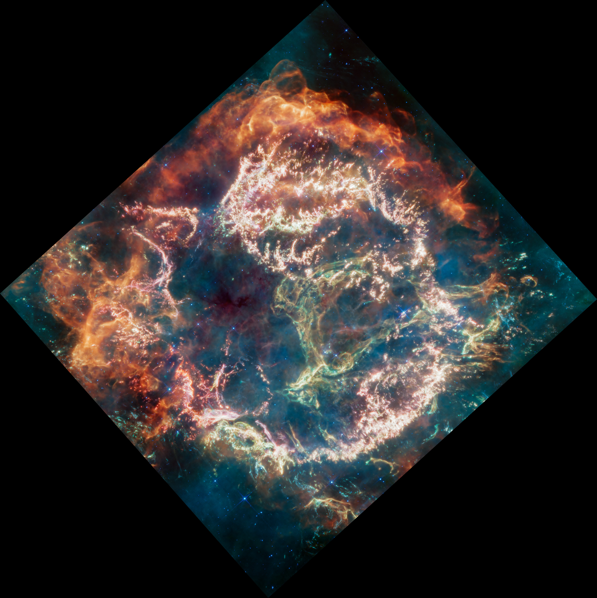
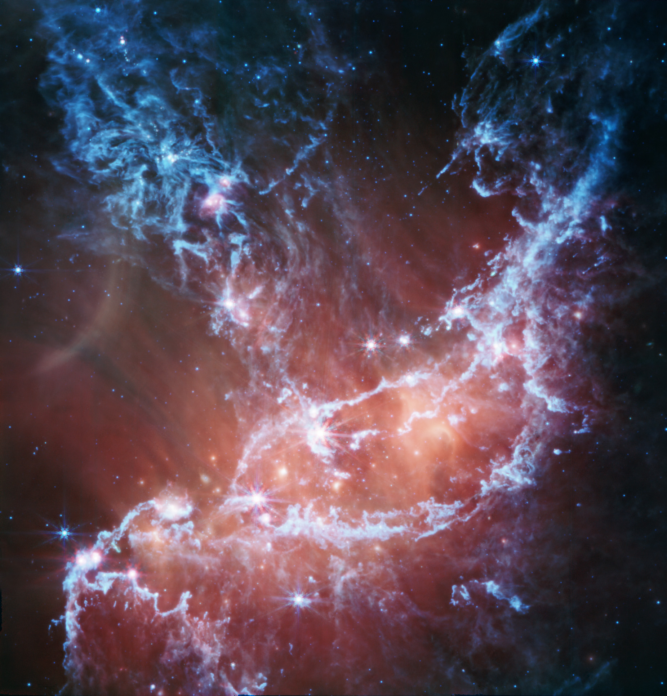
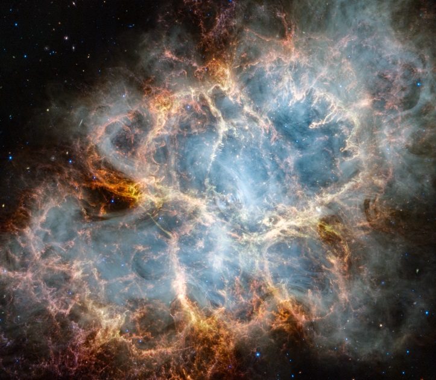

What are Nebulas?
Nebulas are vast clouds of gas and dust in space. They can be regions where new stars are forming, remnants of dead or dying stars, or simply diffuse areas of gas.
Types of Nebulas
1. Emission Nebulas
Emission nebulas are clouds of ionized gas that emit light of various colors. They are often found in regions of star formation.
2. Reflection Nebulas

Reflection nebulas do not emit their own light; instead, they reflect the light of nearby stars, creating beautiful blue hues.
3. Planetary Nebulas
Planetary nebulas are shells of gas ejected by dying stars. They are often round and can be very colorful.